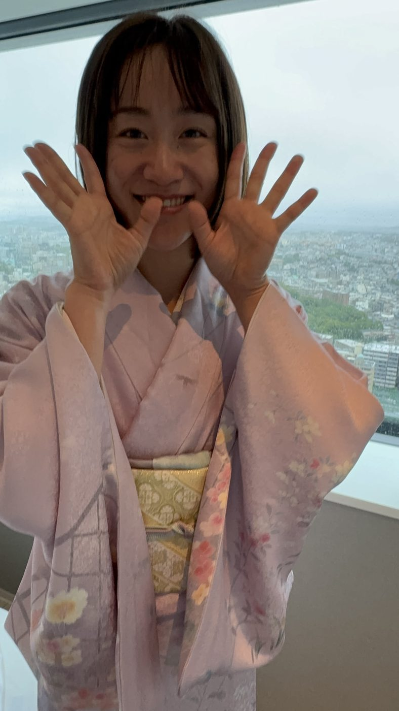
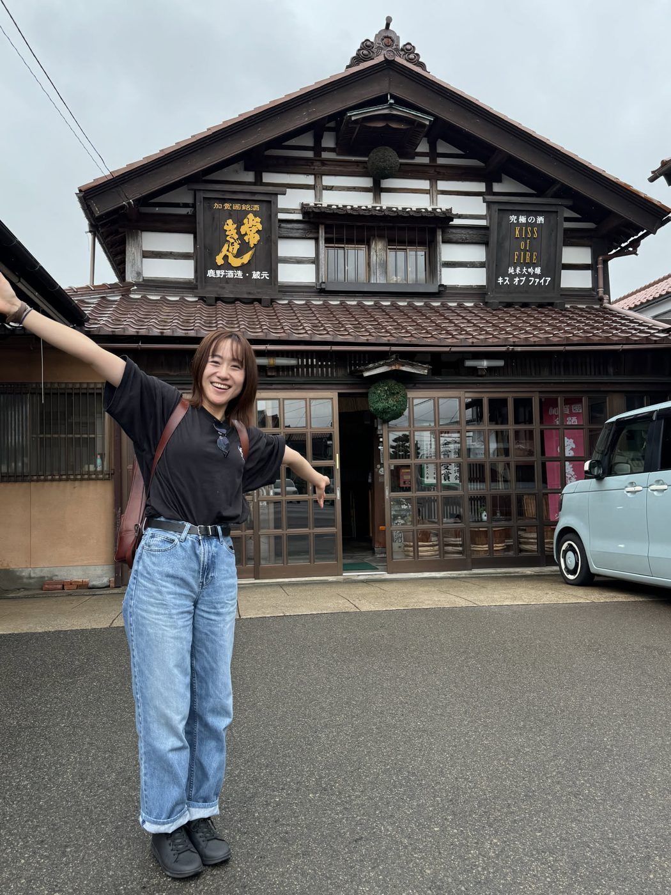

新橋の夜


TOUR 01
Shimbashi Night
Kimono bar-hopping
Evening · about 2.5 h
東京を、ゆりと

As if you were visiting a friend.
Price on requestBookings opening soon
ゆっくり、座れる
ゆっくり、座れる
新橋の夜
TOUR 01
Kimono bar-hopping
Evening · about 2.5 h
清澄白河


TOUR 02
Museum · garden · lunch
Morning · about 3 h
神楽坂から新橋へ


TOUR 03
& a Shimbashi Evening Hop
Afternoon into evening
Afternoon · about 3.5 h
ゆり


料金はお問い合わせください
Price on requestBookings opening soon